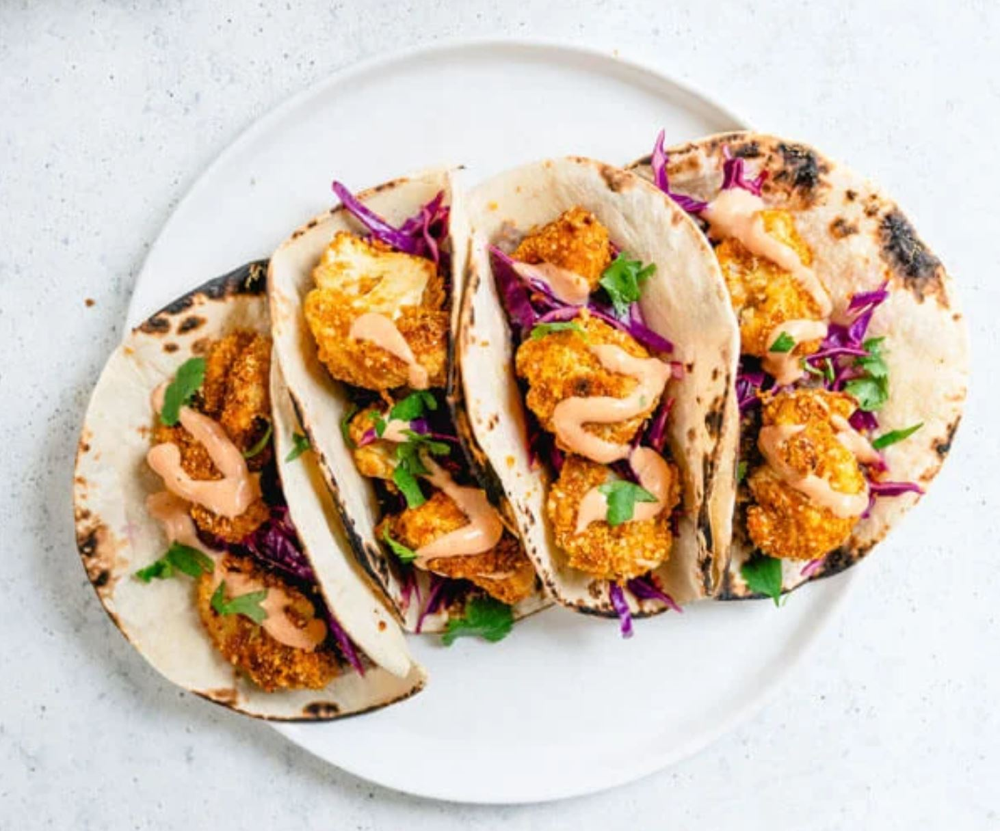

Eggplant Lasagna
PREP: 25 minutes COOK: 1 hour 15 minutes TOTAL: 1 hour 40 minutes SERVINGS: 4
Ingredients
- 2 medium eggplants (about 6 to 8 inches long)
- 1/4 tsp. kosher salt
- 1 tbsp. extra-virgin olive oil
- 3 cloves garlic (minced)
- 1 yellow onion
- 2 tsp. dried oregano
- 1/4 tsp. freshly ground black pepper
- 1 25-oz. jar marinara
- 16 oz. whole milk ricotta
- 1/2 cup freshly grated Parmesan
- 1 large egg
- 1/4 cup chopped fresh parsley (plus more for garnish)
- 4 cups shredded mozzarella
Instructions
- Preheat oven to 400°.
- Cut ends of eggplants and slice thinly, about 1/4” thick. Lay slices on a cooling rack and season with salt. Let sit for 20 minutes. Pat salted sides with paper towel. Flip, season again, and let sit for another 20 minutes. Pat dry with paper towel.
- In a large skillet over medium heat, heat oil. Sauté garlic for 1 minute, then add onions and oregano. Season with salt and pepper and cook until onions are translucent. Add marinara and cook until warmed through.
- In a medium bowl, combine ricotta, Parmesan, egg and parsley. Season with salt and pepper.
- In a 9"-x-13" casserole dish, spread a thin layer of marinara sauce, a single layer of eggplant “noodles", a layer of ricotta mixture, then a layer of mozzarella; repeat layers. Top last layer of eggplant with marinara sauce, mozzarella, and Parmesan.
- Cover with foil and bake for 35 minutes. If desired, remove foil and broil until golden on top, 1 to 2 minutes. Let cool 10 minutes, then garnish with parsley and serve.

Vegan Cauliflower Tacos
PREP: 10 minutes COOK: 30 minutes TOTAL: 40 minutes SERVINGS: 8
Ingredients
Crispy Breaded Cauliflower
- 1 medium head cauliflower (about 2 pounds whole)
- 1/2 cup panko breadcrumbs (use gluten free panko as necessary)
- 1/2 cup cornmeal
- 1 teaspoon cumin
- 1 teaspoon smoked paprika
- 1 teaspoon garlic powder
- 1/2 teaspoon kosher salt
- 1/4 teaspoon turmeric
- 1 tablespoon refined coconut oil
- 1 tablespoon peanut butter
- 1 tablespoon maple syrup
- 2 tablespoons soy sauce (or tamari or coconut aminos)
- 1/2 tablespoon hot sauce
Cauliflower Tacos
- 1 recipe Crispy Breaded Cauliflower
- 15 oz. can vegetarian refried beans
- 1/2 teaspoon cumin
- 2 cups red cabbage (shredded)
- 2 limes
- 3 tablespoons vegan mayor or substitute
- 8 corn tortillas
- Fresh cilantro (for garnish)
Instructions
For the Crispy Breaded Cauliflower
- Preheat oven to 400°.
- Chop the cauliflower into large florets. Place them in a large bowl.
- In a small bowl, mix together the panko, cornmeal, cumin, smoked paprika, garlic powder, turmeric, and kosher salt.
- In a small saucepan over medium heat, whisk together the coconut oil, peanut butter, maple syrup, soy sauce, and hot sauce until fully combined and slightly darkened, 1 to 2 minutes. Pour the sauce onto the cauliflower and stir several times until the cauliflower is well coated.
- Pour about ⅓ of the dry mixture into the bowl with the cauliflower and mix. Repeat twice to stir in the remaining dry mixture to coat all of the cauliflower. Then remove the breaded cauliflower from the bowl with your hands and place it onto a parchment lined baking sheet. About ½ of the crumbs will remain in the bowl; you can discard these.
- Bake the cauliflower for 30 minutes total, flipping the cauliflower with a spatula at the 15 minute mark. Serve immediately. If serving as an appetizer, you could add a drizzle of Yum Yum sauce or another sauce. Or, kids love them with ketchup! (If you have leftovers, you can store them refrigerated and then reheat them in a 350F oven on a parchment lined baking sheet for about 10 minutes, flipping once.)
For Tacos
- Make the Crispy Breaded Cauliflower (about 40 minutes total; use the remaining time to complete the steps below.)
- If using purchased refried beans, taste and if needed, mix with ½ teaspoon cumin and/or a pinch or two kosher salt.
- Thinly slice the cabbage, enough for 2 cups. Mix it with 2 tablespoons lime juice and a pinch or two of salt. Allow it to stand at room temperature until serving.
- Warm the tortillas, or char them by placing them on grates above an open gas flame on medium heat for a few seconds per side, flipping with tongs, until they are slightly blackened and warm.
- Chop the cilantro for a garnish.
- To serve, place refried beans in a tortilla, top with cabbage, breaded cauliflower, vegan mayo, and cilantro. Serve with lime wedges to spritz prior to serving. (If you have leftover cauliflower, you can reheat them in a 350F oven for 10 minutes, flipping once.)To serve, place refried beans in a tortilla, top with cabbage, breaded cauliflower, Yum Yum sauce, and cilantro. Serve with lime wedges to spritz prior to serving. (If you have leftover cauliflower, you can reheat them in a 350F oven for 10 minutes, flipping once.)